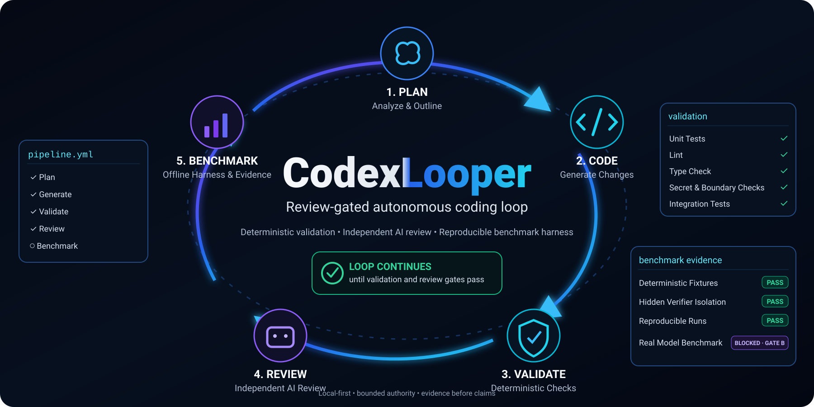

Bounded coding loop
Runs roadmap-scoped implementation work instead of handing an agent unrestricted repository authority.

Open-source, local-first orchestration for bounded autonomous AI coding workflows. CodexLooper coordinates implementation, deterministic validation, independent AI code review and a reproducible offline benchmark harness around Codex-based development.
Runs roadmap-scoped implementation work instead of handing an agent unrestricted repository authority.
Uses host-controlled validation, allowed-path checks, runtime integrity, budget limits, Git authority rules and available syntax, test, build and secret checks before work is accepted.
Separates implementation and review roles, with Terra as the default builder and Sol as an independent reviewer through the configured CloseRouter path.
Records model identity, usage, estimated cost, Git state and completion evidence while avoiding secrets and full model reasoning.
WP8 Phase A: deterministic offline benchmark harness complete.
Real model benchmarks: blocked until Gate B proves the required configuration, identity, isolation, credential, telemetry and verifier boundaries.
CodexLooper does not automatically push, merge, deploy, publish, purchase, contact third parties or modify external accounts.
It is primarily an orchestration and control layer around autonomous coding work. It connects context selection, implementation, deterministic validation, independent review and evidence into a bounded local loop.
No. Real benchmark execution is intentionally blocked until Gate B passes. The current benchmark capability is the deterministic offline harness and its evidence controls.
No. CodexLooper is designed as a local-first developer tool. External model calls use the explicitly configured provider path; external side effects remain outside the autonomous loop.